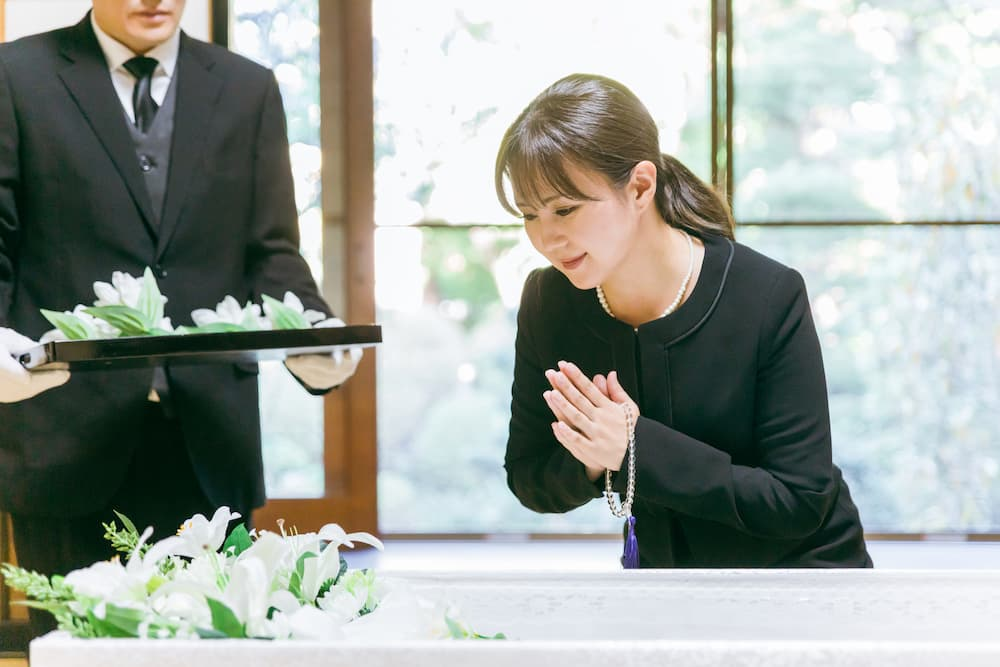

火葬まで待つ日数で増える分も、先にお伝えします。
川崎市・横浜市北部の葬儀相談窓口／24時間365日・年中無休
火葬までお待ちいただく日数によって、ご葬儀の費用は変わります。当窓口は基本料金だけでなく、お待ちいただいた場合の総額の目安を最初にお出しします。深夜・早朝のご相談も承ります。
- 24時間365日 受付
- 川崎・横浜北部に特化
- 総額の目安を先に提示
- 事前のご相談も無料
FOR URGENTご逝去された直後の方へ
まずお電話ください。ご搬送とご安置の手配を先に進め、内容とお費用のご相談はそのあとで承ります。
- お電話でご連絡いまどこにいらっしゃるか（病院・ご自宅・施設）だけお聞かせください。ご家族の人数やご予算が未定でも問題ありません。
- お迎えにあがります寝台車で故人様をお迎えし、ご希望の場所（安置施設・ご自宅）へご搬送します。深夜・早朝も対応します。
- ご安置後に内容のご相談落ち着いた場所で、プラン・日程・お見積りをご相談します。火葬場の空き状況もこの時点でお調べします。
ご遺体の搬送先や葬儀社をご家族が選ぶ権利があります。「もう決めている」とお伝えいただければ問題ありません。すでに他社に搬送された後でも、ご相談は承れます。
PRICEご葬儀のかたちと基本料金
下記は基本料金です。実際のお費用は、火葬までお待ちいただく日数・搬送距離・火葬場の料金で変わります。次の項目でその総額の目安をご確認ください。
基本料金 16.5万円〜（税込）
- お迎え〜ご安置のご搬送（10kmまで）
- ご安置〜火葬場のご搬送（10kmまで）
- ご安置 1日分・ドライアイス 1日分
- お棺・仏衣・お参り用具・骨壺
- 式典スタッフ 1名
- 役所手続きの代行・火葬の立会
別途かかるもの
- 火葬場の使用料・火葬料（自治体・住民区分により異なります）
- ご安置の延長・ドライアイスの追加（1日ごと）
- 10kmを超える搬送、寝台車の深夜割増
- ご希望に応じたお花・返礼品・お食事・宗教者への謝礼
基本料金 38.5万円〜（税込）
- 火葬式の内容すべて（搬送は各20km）
- ご安置 2日分・ドライアイス 2日分
- 式場のご手配・生花祭壇・受付セット
- 白木位牌・遺影・会葬礼状・後飾り
- 式典スタッフ 2名（司会・進行）
別途かかるもの
- 火葬場・式場の使用料
- ご安置の延長・ドライアイスの追加（1日ごと）
- 20kmを超える搬送、寝台車の深夜割増
- お食事・返礼品・供花・宗教者への謝礼
基本料金 49.5万円〜（税込）
- 一日葬の内容すべて（搬送は各20km）
- ご安置 3日分・ドライアイス 3日分
- 通夜の式場・設備・進行
- ご納棺のお身支度（ラストメイク）
別途かかるもの
- 火葬場・式場の使用料（2日分）
- ご安置の延長・ドライアイスの追加（1日ごと）
- 20kmを超える搬送、寝台車の深夜割増
- 通夜振る舞い・お食事・返礼品・供花・宗教者への謝礼
ご希望の多いオプション（税込・一例）
- 骨壺（デザイン品）22,000円〜
- 布張りのお棺33,000円〜
- 湯灌（ゆかん）110,000円
- ラストメイク55,000円
- エンバーミング240,800円
上記以外のご要望も承ります。ご希望がなければ、これらの費用はかかりません。お見積りの際に、含まれるもの・含まれないものを分けてご説明します。
SIMULATION火葬までお待ちいただく日数を含めた、総額の目安
川崎市・横浜市では、火葬場の混み具合により数日お待ちいただくことがあります。その間のご安置とドライアイスは1日ごとに費用が発生します。ここを先にご確認ください。
総額の目安をその場で計算
ご葬儀のかたちと、お待ちいただく日数をお選びください。
※お待ちいただく日数は時期により変動します。横浜市内では平均で4日半ほどお待ちいただく実績があります（当窓口調べ）。
※基本料金には火葬式で1日分のご安置・ドライアイスが含まれています。それを超えた日数のみ、下記の「延長」に計上しています。
| 基本料金 | 165,000円 |
|---|---|
| ご安置・ドライアイスの延長（3日分） | 60,000円 |
| 火葬場の使用料・火葬料 | 0円 |
上記は当窓口の実績にもとづく目安の金額です。実際のお費用は、搬送距離・式場の空き状況・ご希望の内容（お花・お食事・返礼品・宗教者への謝礼など）により変わります。正式なお見積りは、お電話またはフォームでのご相談時に、内訳を明記してお出しします。
※お花・お食事・返礼品・宗教者への謝礼は上記に含まれません。
REASON当窓口が大切にしていること
- 増える分を、先に出すお待ちいただく日数で費用が動くことを、ご依頼の前にお伝えします。あとから知らされることのないように。
- 川崎・横浜北部に絞るこの地域の火葬場・式場の空き状況と、実際にかかる日数を把握しています。全国対応の窓口とは異なります。
- 深夜・早朝に人が出るご逝去は時間を選びません。24時間365日、折り返しではなくその場でお話をうかがいます。
HALLご案内できる主な斎場・火葬場
当窓口では、下記の斎場のご利用・お手配が可能です。ご希望の場所・ご参列の人数・お待ちいただく日数に応じてご提案します。
- かわさき北部斎苑
- かわさき南部斎苑
- 横浜市北部斎場
- 正福寺 公会堂
- セレモニーホール雪月花
※特定の斎場との専属提携ではなく、ご利用・お手配が可能な斎場としてご案内しています。ご希望に応じて、上記のほかの斎場・火葬場も手配いたします。
MESSAGE後悔しないお見送りのために、今できること
最後のお別れは、一度きりの大切な時間です。分からないまま急いで決めて、あとから悔いを残さないために―― 費用のこと、日数のこと、段取りのこと。どんな些細なことでも、まずはお話をお聞かせください。もしもの時に慌てないための、事前のご相談も承っています。

FLOWご逝去から お見送りまでの流れ
- ご連絡・お迎えお電話をいただき次第、寝台車でお迎えにあがります。
- ご安置安置施設またはご自宅へご搬送し、ドライアイスの処置を行います。
- お打ち合わせご葬儀のかたち・日程・火葬場の空き状況・お見積りを確定します。
- お手続き死亡届・火葬許可の申請を代行します。
- ご葬儀・火葬ご希望の内容でお見送りいただきます。
- ご葬儀のあとご遺骨のお引き取り、納骨・法要のご相談も承ります。
FAQよくいただくご質問
いま病院にいます。すぐに決めなければいけませんか？
病院から退院（ご搬送）をお願いされることはありますが、葬儀社をその場で決める必要はありません。まずお電話ください。ご搬送とご安置だけを先に進め、内容のご相談はあとで落ち着いて行えます。
費用がどこまで増えるのか不安です。
お待ちいただく日数・搬送距離・火葬場の料金で変わります。上の「総額の目安」で概算をご確認いただき、お電話またはフォームで正式なお見積りをお出しします。お見積りには内訳を明記します。
深夜でも電話はつながりますか？
24時間365日、担当者が対応します。折り返しではなく、その場でお話をうかがいます。
菩提寺がありません。宗教者は手配できますか？
ご希望に応じて手配のご相談を承ります。お布施・謝礼の目安も事前にお伝えします（基本料金には含まれません）。
まだ亡くなっていませんが、相談してよいですか？
もちろん承ります。事前にご相談いただくと、日程・費用・必要な段取りを落ち着いてご準備いただけます。無料です。下のフォームからもお申し込みいただけます。
電話はせず、資料だけ送ってもらえますか？
承ります。下のフォームで「資料だけ送ってほしい」をお選びいただき、お送り先のご住所をご記入ください。無料でお送りします。こちらから営業のお電話を差し上げることはありません。ただし、お急ぎの場合は資料のご請求ではなく、必ずお電話でご連絡ください。
生活保護を受けています。葬儀はできますか？
福祉葬（生活保護の葬祭扶助）にも対応しています。お住まいの自治体への申請が必要で、支給される範囲内でお見送りいただける内容をご案内します。申請は原則としてご葬儀の前に行う必要がありますので、まずお電話でご状況をお聞かせください。
どこが運営している窓口ですか？
株式会社ランバードが運営する葬儀相談窓口です。ご葬儀の施行は提携葬儀社が行います。詳しくはページ下部の運営者情報をご覧ください。
CONTACT事前のご相談・資料のご請求
お急ぎでない方は、フォームからもご相談を承ります（無料）。1〜2営業日以内にご連絡します。お急ぎの場合は、フォームではなく必ずお電話ください。
ご葬儀のかたち・基本料金・お手続きの流れをまとめた資料を、無料でお送りします。お電話でのご相談は必要ありません。下のフォームで「資料だけ送ってほしい」をお選びのうえ、お送り先のご住所をご記入ください。
※ご請求後にこちらから営業のお電話を差し上げることはありません。お急ぎの場合は、資料のご請求ではなくお電話をお願いします。
ご葬儀の施行は、提携葬儀社である 株式会社True Heart（神奈川県川崎市高津区）が行います。当窓口は、ご相談内容にもとづき提携葬儀社をご紹介するサービスです。
ご紹介にあたり、ご遺族に対して通常のお費用に上乗せしてご請求することはありません。